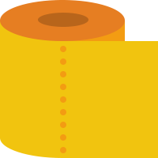
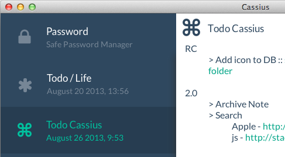
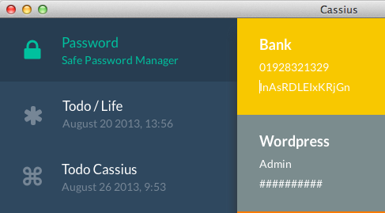

Rich Text Editor
Clean and neat text editor, with loads of features tweaks and bumps.

cr.yp.to
Everything's encrypted, so don't worry about leaky database and stuff.
Cloud Sync
Bropbox, iLoud, Owncloud or SSHfs, Cassius works with any flavour of cloud.
Open Source
Everything's open-source. Feel free to come and review the code !
Featuring...
